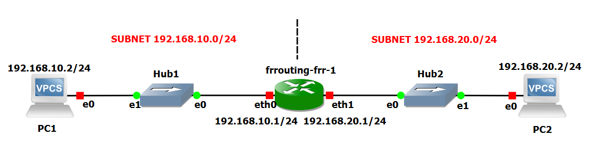
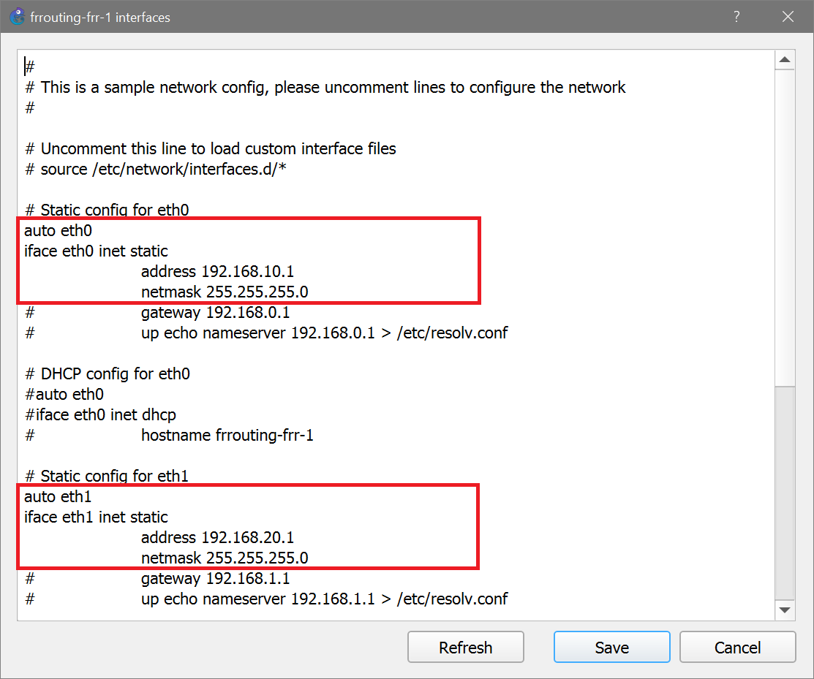
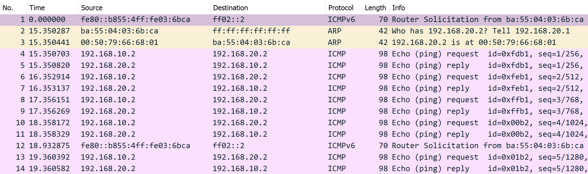

Lab #2
Two LANs connected by a router
The purpose of this lab is to show how two LANs can be connected by means of a router.
NOTICE: this lab requires the GNS3 VM to instantiate a Docker container of a Linux-based router.
Preparation steps
The procedure described here will be executed only once. Its purpose is to give GNS3 the ability to instantiate a Docker container of a Linux-based router based on the FRR (Free Range Routing) software suite.
This component will be also used in further labs. This preparation step, however, will not be repeated.
- Check that the GNS3 VM has the IP forwarding feature enabled in the Linux kernel.
- Open a shell in the GNS3 VM and check that the command
sysctl net.ipv4.ip_forward
returns
net.ipv4.ip_forward = 1
This kernel option should already be enabled in the /etc/sysctl.d/99-sysctl.conf configuration file which is read at startup of the GNS3 VM.
-
If the previuos command returns 0, you may enable IP forwarding by issuing the command:
sudo sysctl -w net.ipv4.ip_forward=1
To make this setting permanent, you have to edit the /etc/sysctl.conf file by adding the line:
net.ipv4.ip_forward = 1
and then issue the command sudo sysctl -p to apply the modifications.
- In GNS3 go to Edit/Preferences... and select Docker container templates from the panel on the left of the Preferences window.
- Click on New.
- Select the Run this Docker container on the GNS3 VM option and press Next.
- Choose the New image action.
- Type frrouting/frr:latest in the Image name textbox and press Next.
- Confirm the default frrouting-frr name for the template and press Next.
- Specify 3 as the number of adapters you want this container to use and click Next.
- Leave blank the Start command textbox and click Next.
- Leave the console type set to telnet and click Next.
- Click Finish to complete this configuration process. frrouting-frr will now appear in the list of available Docker container templates.
- In the Preferences window, select frrouting-frr from the list of available Docker container templates and click Edit.
- In the Docker container template configuration window that appears, choose the Routers category.
- In the same window, choose the Browse... button, select the router symbol from the Classic set of icons and press OK.
- Press OK to close the Docker container template configuration window.
Notice that the first time that the frrouting-frr component will be added to a GNS3 project, the Docker container image will be pulled from Docker Hub repository. This will require a few seconds.
Experiment steps
- Recreate the following topology in GNS3. Choose the "GNS3 VM" server to instantiate all the devices of this lab.

- When the devices are still inactive, right-click on the router icon and select the Configure option.
- Press Edit to modify the router's network configuration.
- Modify the router's interfaces configuration as illustrated in the following picture.

- Start all devices.
- Open PC1 terminal and execute the following:
- assign IP address 192.168.10.2 with netmask /24 and default gateway address 192.168.10.1 to PC1 with the command:
ip 192.168.10.2/24 192.168.10.1
- make this the automatic default configuration at startup for PC1 by issuing the command
save
at command prompt.
- Open PC2 terminal and execute the following:
- assign IP address 192.168.20.2 with netmask /24 and default gateway address 192.168.20.1 to PC2 with the command:
ip 192.168.20.2/24 192.168.20.1
- make this the automatic default configuration at startup for PC2 by issuing the command
save
at command prompt.
- Start capture on link connecting Hub2 to PC2.
Traffic generation
Open PC1 terminal and execute the following:
ping 192.168.20.2
and verify that answers are received.
Press ctrl-C at any time to stop ping.
Packet capture analysis
The picture above shows the packets captured by Wireshark running on the link connecting Hub2 to PC2. Ignore ICMPv6 packets no.1 and no. 12.

Return to list of labs
Copyright (c) 2024 - Roberto Canonico
Last updated: October 3, 2024 by Roberto Canonico